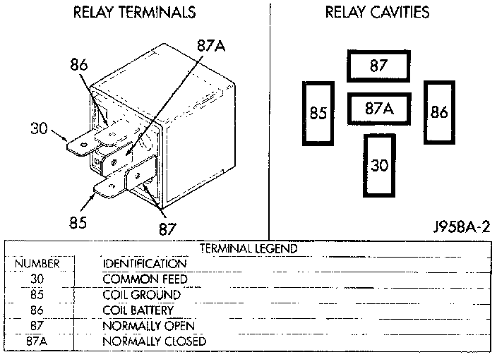

Heated Glass Element Relay: Testing and Inspection
Defogger Relay:

Relay Test
The defogger relay is located in the junction block, on the right cowl side panel below the instrument panel in the passenger compartment. Remove the defogger relay from the junction block to perform the following tests:
1. A relay in the de-energized position should have continuity between terminals 87A and 30, and no continuity between terminals 87 and 30. If OK, go to Step 2. If not OK, replace the faulty relay
2. Resistance between terminals 85 and 86 (electromagnet) should be 75 ± 10 ohms. If OK, go to Step 3. If not OK, replace the faulty relay.
3. Connect a battery to terminals 85 and 86. There should now be continuity between terminals 30 and 87, and no continuity between terminals 87A and 30. If OK, see the Relay Circuit Test. If not OK, replace the faulty relay.
Relay Circuit Test
1. The relay common feed terminal cavity (30) is connected to battery voltage and should be hot at all times. If OK, go to Step 2. If not OK, repair the open circuit to the PDC fuse as required.
2. The relay normally closed terminal (87A) is connected to terminal 30 in the de-energized position, but is not used for this application. Go to Step 3.
3. The relay normally open terminal (87) is connected to the common feed terminal (30) in the energized position. This terminal supplies battery voltage to the fuse in the junction block that feeds the rear glass heating grid and the defogger switch LED. There should be continuity between the cavity for relay terminal 87 and the rear glass heating grid/defogger switch LED at all times. If OK, go to Step 4. If not OK, check the fuse in the junction block and/or repair the open circuit as required.
4. The coil battery terminal (86) is connected to the electromagnet in the relay. It is connected to battery voltage and should be hot at all times. Check for battery voltage at the cavity for relay terminal 86. If OK, go to Step 5. If not OK, repair the open circuit to the PDC fuse as required.
5. The coil ground terminal (85) is connected to the electromagnet in the relay. This terminal is provided with ground by the Body Control Module (BCM) to energize the rear glass heating grid and defogger switch LED. There should be continuity to the rear window defogger relay control circuit cavity of the white 24-way BCM wire harness connector. If OK, use a DRB scan tool and the proper Computers and Control Systems/Body Control Module/Testing and Inspection Procedures to diagnose the BCM. If not OK, repair the open circuit as required.